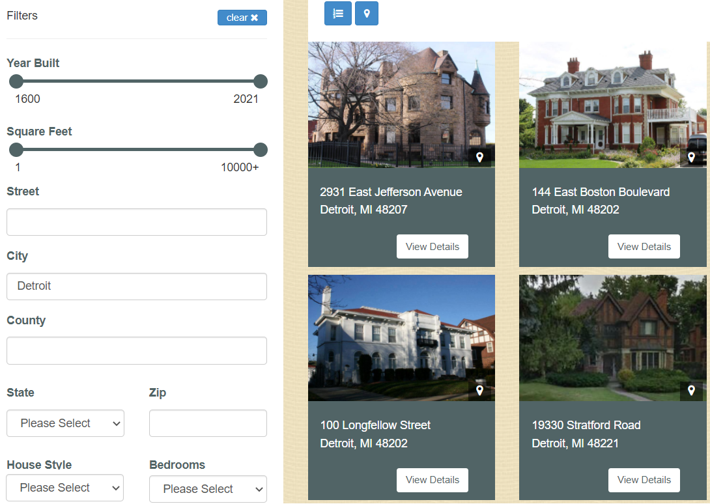
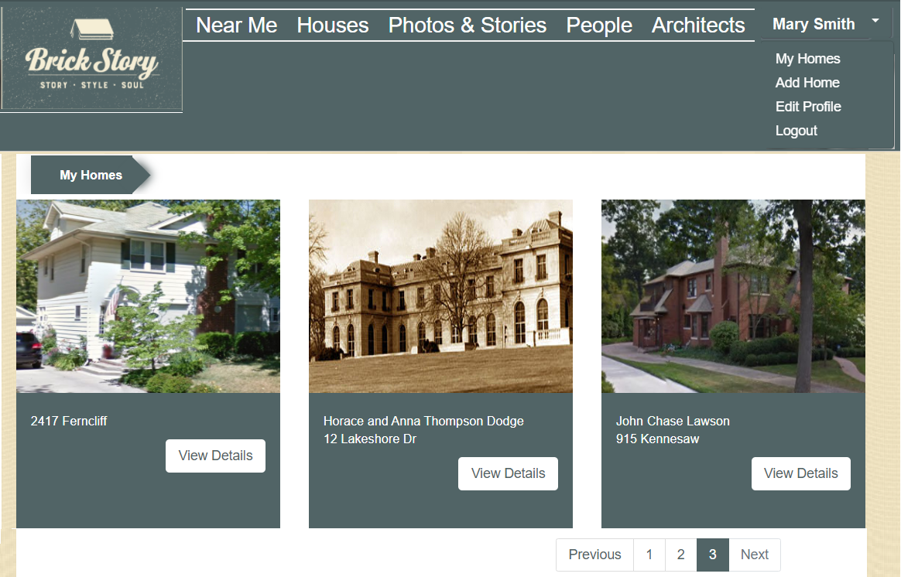
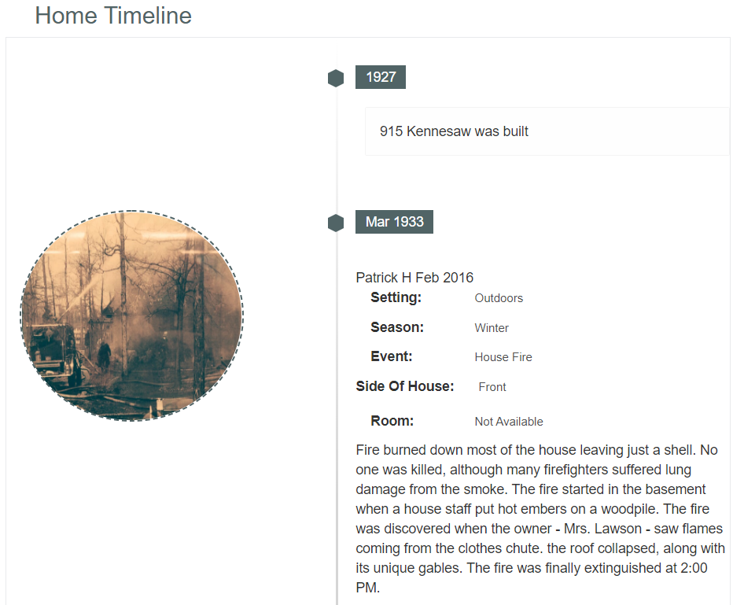

How It Works
When you click on the "Search" tab on the left-hand side.you are able to search all the homes on Brickstory.com.You can refine your search to simply a type of home,age or home size along with a number of other filter options .From here you can navigate your selected homes to find more photos and stories. you can even sort and man the homes tha are closed to you.

Search
When you click on the "Search" tab on the left-hand side.you are able to search all the homes on Brickstory.com.You can refine your search to simply a type of home,age or home size along with a number of other filter options .From here you can navigate your selected homes to find more photos and stories. you can even sort and man the homes tha are closed to you.

My Homes
When you click on the "My Homes" tab on the left-hand side.you will see the homes that personally added.you will see the photo of the home and just below that.the number of homes we have on that home. Here could be a story or a photo or both,of a time and experience you had in and around that home.To see more detail about the home. simply click the image of home.

My Timelines
When you click on the "My Timeline" tab on the left- hand side. you will see the chronological listing of homes that you have lived in.